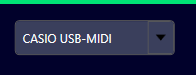

Acorde Visual Midi
(Lançamento em Breve)

Inteligência Real para Casa, Palco e Estudo.
Interpreta Acordes via sinais MIDI em tempo real através de um motor de regras avançado que entende a intenção do músico, oferecendo uma análise precisa e didática.
🧠 Por que ele é mais inteligente?
Filtro de Baixo Real
O software identifica oitavas dobradas no grave e separa a região do baixo do corpo do acorde. Resultado: cifras limpas como C/Bb mesmo com o baixo dobrado.
Análise de Conflitos
Percebe choques entre notas (como 3ª e 4ª justa) e prioriza automaticamente as interpretações de acordes mais estáveis e musicais.
Contexto Dinâmico
Diferencia nuances teóricas como a 5# (alteração de base) e a 13b (extensão) dependendo da estrutura harmônica presente.
Nomenclatura Inteligente
Facilita o aprendizado exibindo estruturas claras como Cm7(9) e aplica filtros de hierarquia em acordes complexos, ocultando notas redundantes (ex: C13) mas mantendo avisos de conflito (ex: C13(11)).
Abaixo, tela da versão para macOS (Intel) operando no modo "Acorde Sobre", com interface limpa e foco total na identificação rápida.

Abaixo, tela da versão para Windows 11 (24H2 ou superior) com imagem de cifras carregada e no modo Split, que mostra detalhadamente os intervalos e candidatos a acorde.

"O Acorde Visual Midi funciona como um espelho da sua execução. Muitas vezes tocamos no automático e não percebemos imprecisões na montagem. O programa permite confirmar se a sua posição no teclado corresponde ao acorde pretendido. Eu mesmo descobri erros que não percebia, e hoje uso para expandir meu vocabulário de Acordes."
🖼️ O Diferencial: Modo "Acorde Sobre" (Overlay)
Ao selecionar Acorde Sobre, o nome do acorde aparecerá no tamanho, cor e transparência que você definir, projetado diretamente sobre a sua imagem ou cifra carregada. Isso permite ler a música e monitorar o Acorde simultaneamente.

Note que os controles somem após alguns segundos de inatividade, limpando o palco para a sua música. O recurso Hold Notes segura o acorde na tela para sua análise detalhada.

Certifique-se de carregar seu dispositivo MIDI corretamente. Para usuários de Windows 11 (versão 24H2 ou superior), o sistema suporta acesso compartilhado ao teclado MIDI por múltiplos aplicativos, facilitando a conexão com Kontakt e DAWs simultaneamente.
O Acorde Visual Midi é GRATUITO e Open Source.
Apoie o projeto via Pix: rycobuckton@gmail.com
Acredito na democratização do ensino musical e da tecnologia.
O programa está disponível no GitHub para verificações, inclusive de vírus. Por ser um software independente e sem assinaturas digitais pagas (Microsoft/Apple), os sistemas operacionais podem gerar falsos alertas de segurança. O projeto está em desenvolvimento ativo e, embora testado com milhares de combinações, segue em constante evolução para mapear a complexidade da harmonia musical. Não posso garantir reconhecimento total dos acordes existentes, mas o sistema já identifica uma gama expressiva de extensões.